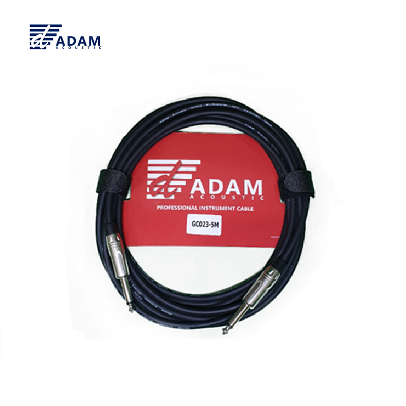

GC023은 OFC(Oxygen-Free Copper, 무산소동) 도체를 사용한 프로페셔널 악기 케이블입니다. Straight 55TS(6.35mm) Male ↔ Straight 55TS(6.35mm) Male 구성으로, 양쪽 모두 Straight(Straight) 커넥터를 장착하여 범용성이 뛰어납니다. 일렉기타·베이스·키보드 등 악기와 앰프·이펙터를 연결할 때 사용되며, OFC 도체의 우수한 전도성과 64심 접지 실드로 깨끗한 악기 신호를 전달합니다.

OFC 도체 악기 케이블. Straight 55TS(6.35mm) Male ↔ Straight 55TS(6.35mm) Male 연결.
| 길이 | 소비자가 (VAT 포함) | 비고 |
|---|---|---|
| 3M | 13,200원 | 재고없음 |
| 5M | 15,200원 | 재고없음 |
| 7M | 17,600원 | |
| 10M | 24,200원 |
ADAM GC023은 양쪽 모두 Straight 55TS(6.35mm) Male 커넥터를 장착한 악기 케이블입니다. 범용 Straight 플러그 구성으로 기타·베이스·키보드와 앰프·믹서·DI박스 등 다양한 장비 간 연결에 사용할 수 있습니다. 커넥터 방향 제약 없이 어떤 잭 위치에도 연결이 가능한 표준 구성입니다.
OFC(Oxygen-Free Copper) 도체를 사용하여 높은 전도성과 내산화성을 확보했으며, 0.10mm 두께 와이어 20심 × 1코어 신호선과 0.08mm 두께 와이어 64심 접지 실드로 구성되어 있습니다. CCAM 대비 우수한 신호 전달 품질을 제공합니다.
GC023 악기 케이블의 핵심 포인트입니다.
음향 케이블에 사용되는 구리 도체의 종류별 특성과 가격대를 비교합니다. GC023은 OFC 도체를 사용합니다.
| 항목 | CCA | CCAM | OFC | OCC |
|---|---|---|---|---|
| 정식 명칭 | Copper Clad Aluminum | Copper Clad Aluminum Magnesium | Oxygen-Free Copper | Ohno Continuous Casting |
| 구리 순도 | — | — | 99.95%+ | 99.9997%+ |
| 전도성 | ★★☆☆☆ | ★★★☆☆ | ★★★★☆ | ★★★★★ |
| 내산화성 | ★★☆☆☆ | ★★★☆☆ | ★★★★☆ | ★★★★★ |
| 기계적 강도 | ★★☆☆☆ | ★★★☆☆ | ★★★☆☆ | ★★★★☆ |
| 무게 | 가벼움 | 가벼움 | 보통 | 보통 |
| 주요 용도 | 임시 배선 소모품 | 교회·학교 일반 행사 | 프로 공연 레코딩 | 하이엔드 마스터링 |
GC023의 상세 기술 사양입니다.
| 모델명 | GC023 |
|---|---|
| 케이블 타입 | 악기 케이블 (OFC) |
| 커넥터 | Straight 55TS(6.35mm) Male ↔ Straight 55TS(6.35mm) Male |
| 도체 | OFC (Oxygen-Free Copper) |
| 신호선 | 0.10mm × 20심 × 1코어 (≈25 AWG 상당) |
| 접지 실드 | 0.08mm × 64심 |
| 외경 (O.D.) | 6mm |
| 연결 방식 | Unbalanced |
| 판매 길이 | 3M / 5M / 7M / 10M (3M·5M 재고없음) |
GC023 악기 케이블의 대표적인 활용 분야입니다.
오디오 케이블의 신호 전송 방식에는 밸런스드(Balanced)와 언밸런스드(Unbalanced) 두 가지가 있습니다. GC023은 언밸런스드(Unbalanced) 케이블입니다.